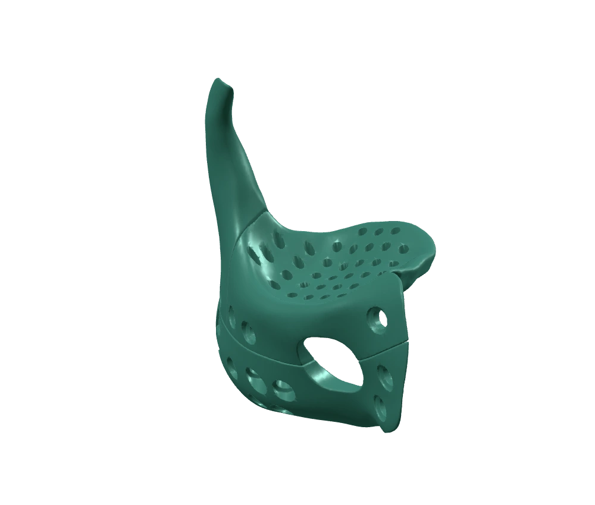
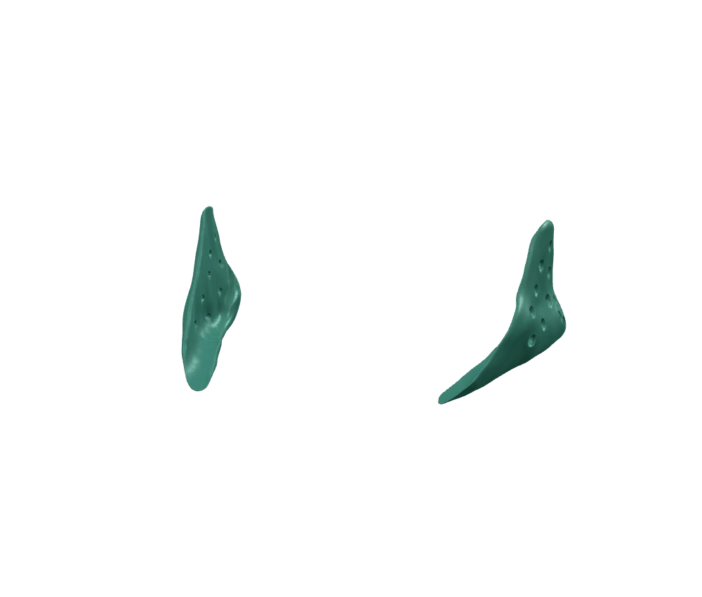
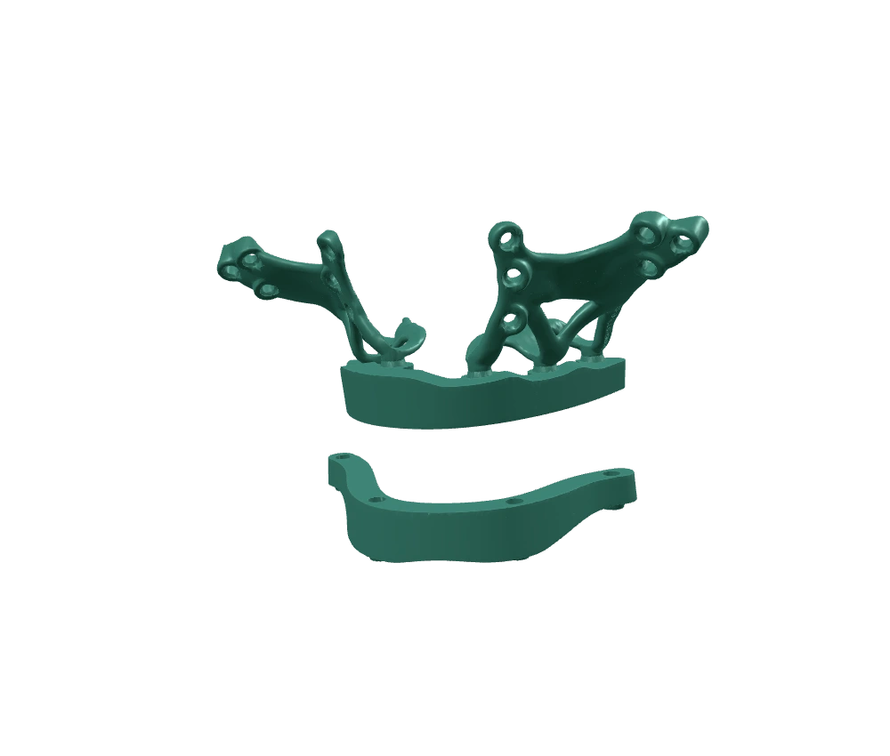
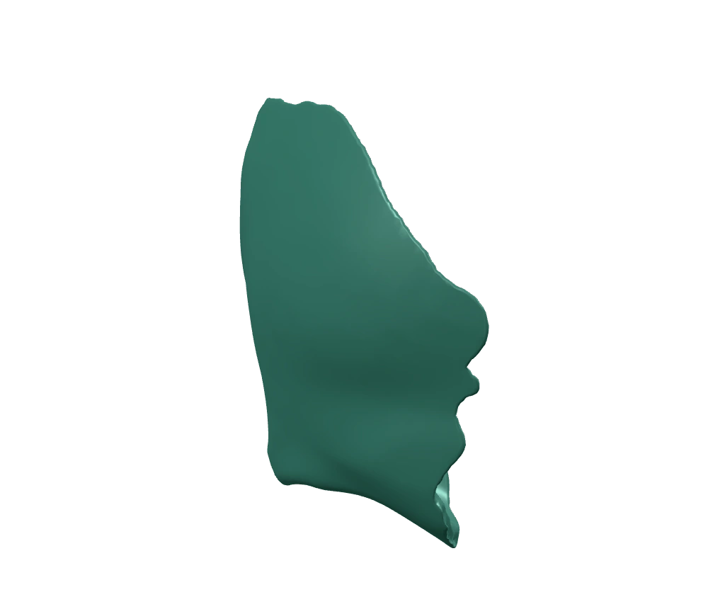

03 / ORBITAL & MALARSupporting form.
Respecting anatomy.
A multi-part orbital and cheek design that considers the relationship between orbital support, surrounding bone and facial contour.
ERFAN MOHITI / MEDICAL DESIGN STUDIO
Transforming complex anatomy into considered design.
Patient-specific
implants. Surgical planning. New possibilities.
01 / FORM FOLLOWS THE INDIVIDUAL
Good medical design begins by looking closer. At the anatomy, the surgical objective, and the details that make each case different.
Explore a selection of my original work — where technical precision meets a considered approach to form and function.

CONTOUR. BALANCE. INDIVIDUALITY.
Facial design is about the relationship between structure and identity.
Patient-specific mandibular angle implants are developed around the individual bone surface and the intended facial contour. This bilateral design brings the implant and anatomy into one coherent planning conversation.
02 / FROM INSIGHT TO FORM
Explore the thinking behind the design.
Select a stage to
follow the process.
Start with the anatomical context. Review imaging and the clinical objective to identify the relationships that will shape the design.
A DESIGN PROCESS INFORMED BY 400+ PATIENT CASES

STRUCTURE WITH INTENTION
A framework is more than a shape. It is a set of relationships.
Subperiosteal design connects the bone surface, the prosthetic plan and the intended surgical pathway. Explore how an individualized framework follows the anatomy while bringing these requirements together.
03 / RECONSTRUCTIVE THINKING
Different anatomical challenges.
The same commitment to
patient-specific design.

03 / ORBITAL & MALARA multi-part orbital and cheek design that considers the relationship between orbital support, surrounding bone and facial contour.

04 / CRANIAL RECONSTRUCTIONA patient-specific cranial implant developed in relation to the surrounding anatomical surface. Explore the geometry and its context in 3D.
Original project geometry, simplified for portfolio viewing. Design presentations do not establish clinical outcomes.
04 / THE PERSON BEHIND THE PRECISION
I’m Erfan Mohiti, a maxillofacial prosthesis designer at Farin Roshaan.
Across more than 400 patient cases, my work has connected digital planning with the demands of implant design, surgical guides and production. My focus is simple: understand the individual, then design with intention.
Discover Farin RoshaanGOOD DESIGN STARTS WITH A CONVERSATION